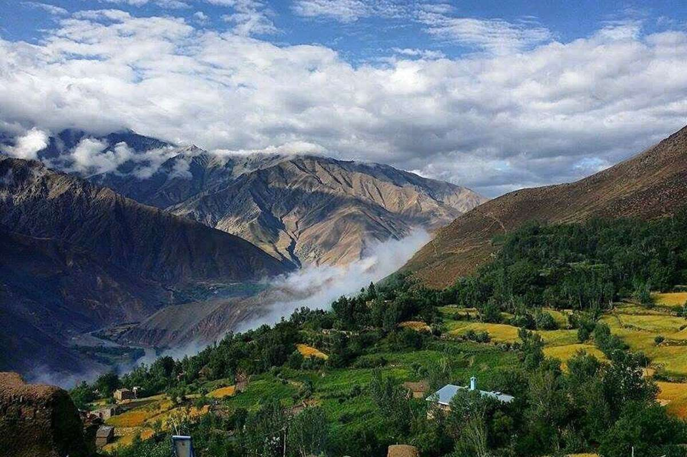

Why Panjshir
Panjshir; The Place of fabulaus people
Politically, this province has been considered the start point of Afghanistan's Jihad period against the Soviets. This province is also the birthplace of Afghanistan's national hero, Ahmad Shah Massoud. Although "emeralds" have been reported from this gion for literally thousands of years, the Panjshir Valley of Afghanistan has produced commercial amounts of emerald only for the last two decades (figure 1).
Because of the Soviet occupation of Afghanistan during much of this time, as well as regional political instability, access by Westerners has been limited. In July and August of 1990, however, the senior author visited the Panjshir Valley, collected specimens, and studied the emerald-mining operation.